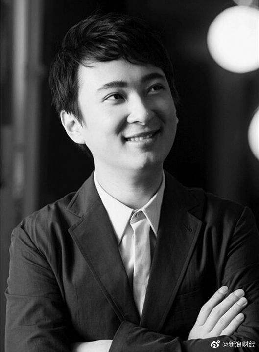

我一个朋友说他发现一个发生过很多次的隐藏规律：类似的事情被查或者被处罚前，他从来都没听说过。他说他上的可能是一个假的互联网。
@新浪财经:
【#王思聪投资的游戏陪练平台被指涉黄# 已永久封号超2万个】王思聪投资的“比心陪练”平台“深夜服务”被指涉黄严重，有报道称该平台一些女陪练在幕后团伙指挥下，主动向“玩家们”兜售“ 深夜服务”，主要是视频裸聊和性服务。8月21日，@比心陪练 官方微博发布一则“关于加强内容审核声明”称，在接到用户举报和风控系统识别告警后，平台已采取账号冻结、列入黑名单风控系统等措施。目前累计永久封禁涉黄账号超过2万个。 王思聪投资的游戏陪练平台被指涉黄 已永久封号超2万个
王思聪投资的游戏陪练平台被指涉黄 已永久封号超2万个
- 